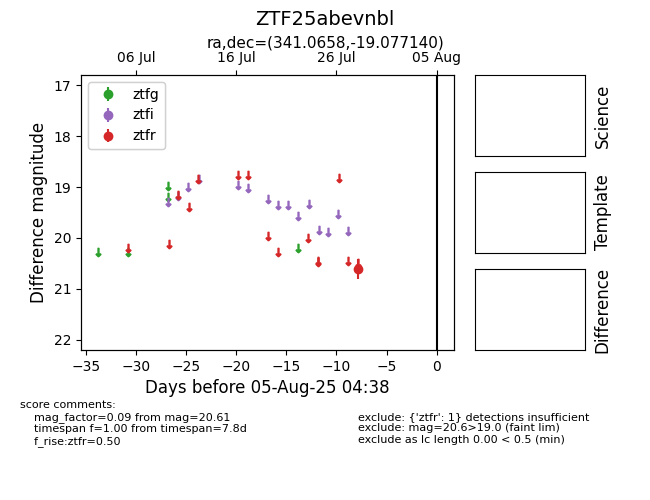

Target ZTF25abevnbl at 2025-08-05 04:38, see:
FINK: fink-portal.org/ZTF25abevnbl
Lasair: lasair-ztf.lsst.ac.uk/objects/ZTF25abevnbl
ALeRCE: alerce.online/object/ZTF25abevnbl
alt names
ZTF25abevnbl (ztf,fink)
coordinates:
equatorial (ra, dec) = (341.0658,-19.07714)
galactic (l, b) = (41.5420,-59.76137)
photometry
last ztfr=20.61
1 ztfr detections
